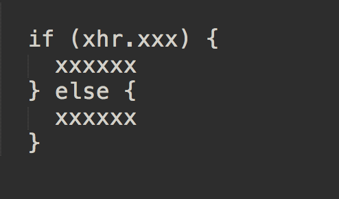

許天柱
应聘前端开发校招生
个人简介
2013 年入学，就读于浙江农林大学，本科，信息工程学院下面的计算机科学与技术专业，大四
知乎上个人简介有写关于个人兴趣爱好、自我性格评价的东西，有兴趣请在看附录链接
在校期间，学习了计算机科学与计算专业学生需要念的各门课程，四年平均绩点在中上水平，无须多说
曾经 C、C++、数据结构等等一系列课堂上，为了调节沉闷的课堂气氛，长期举手回答、上讲台板书的狂魔
从大二跟随老师学习开始，使用 ubuntu 系统，接触 linux，并进行实际的小型项目开发工作
此后除非教学需要以及兼容性考虑，一般不会再用 windows，15年暑假买了自己的 MBPR
（15寸的 T2，不需要公司再配 mac，只求能有好的外显示器
简单来说说，强迫症患者，长期以来的编码过程中，严格遵照 space: 2 ｜ space: 4 的代码缩进
不论过去还是今后，技术栈总趋势肯定往全栈方向发展，而 OC、Python、js、前端相关估计会偏重一些
html5、css3 相关的这里就不谈了，实实在在比一般大学生写的、懂的都多
经常访问 CSS-Tricks、CodePen
喜欢在前端页面实现中通过 transform 或关键帧为各类控件、元素实现酷炫的动画效果
（总有一天要成为能写出行云流水般效果的大师！）
有买 VPN（ 如Express ），经常 Google
至于 js 这块，在不断地使用与学习，以前最常用到 jQuery 框架，熟悉 ajax、RESTful 请求，以及对 ele 写各种事件
其实能自己用 Python 写 json 接口，再去跟前端页面交互（请不要问我跨域怎么跨这类问题）
========================== 我是一条分割线 ==========================
Chrome 开发者工具的熟练度、深度还有待不断提高
有进行些 js、animation 这类的基本调试
有相关的储备 Chrome 调试相关
很自觉终身学习，希望一份稳定长期的全职工作，没特殊情况不介意加班、甚至一般都是自己给自己加班 ：）
通常情况下都在思考问题，不大说话，偶尔也能切换状态，变话痨逗比、嘻嘻哈哈，且三观较正，与人相处友善
毕竟计算机专业出身，其实涉略很多了，决定做个真 • 前端工程师，希望进入个氛围好的团队好好工作学习进步
========================== 后记：写给有赞 ==========================
前边的内容大致没变
在这里是想为自己解释一番
负责 3 月初那次"电面"的是旺仔哥，而同时那也是我第一次"电面"（没办法，以前都是被推荐）
当时他问了我俩问题：
1. 他说我简历中有提到 ajax，于是问起我原生 ajax 实现
确实前面又沉迷了 2 年游戏，不像现在彻底弃了游，开始认真、系统地学习、梳理 js，看相关的书
抛弃掉之前工作上一直依赖的 jQuery，demo 尽量都用原生 js 自己来操作 DOM，添改事件
其实当时脑海里也曾浮现出 if(xhr.xxxx) {} else {}，如下图中的这种模糊印象

毕竟第一次电面，不够调皮，只想着别浪费旺仔哥时间，很干脆地回答了"不知道"
工作经历
2014 年 11 月 - 2016 年 4 月
期间一直跟随学校于老师学习、干活，在 linux 平台上进行基于 django 框架对学校内外相关网站前端与后端开发、维护
2016 年 10 月 - 2016年 12 月
在杭州拱墅优机菜圃，担任java程序员，编写三农邦配送系统子组件后台实现与前端页面
后因公司搬迁梦想小镇（离我刚刚才搬好的住处直线 15 公里...其它人也都不肯干），整个部门散伙
项目经历
2015 年期间
Web 相关东西杂七杂八写了挺多了，太老的项目没能去好好整理，有些烂尾着的也不好拿出手，这里举几个例子吧，先附上链接：
学校动科院 - http://cast.zafu.edu.cn/ ｜ 园林学院 - http://laas.zafu.edu.cn/ ｜ 理学院 - http://lxy.zafu.edu.cn/
cast是学校动科院的，完成于 15 年 7 月，跟随于老师时候，做的几个比较完整的 web 项目之一，后台基于 python2.7 版本 Django == 1.4.16
简单说明一下，设计稿当时是动科学院那边找人做好了拿过来的，现在回过头看，除了“教学科研平台”下栏目多了几个图标
（当然公共新闻内容肯定也在变，其余跟当时完成时一致，至于后期维护，哈哈，不归我管）
我这边当时三人小团队，小蔡负责切图，小袁主要负责后台数据添加，以及帮忙考虑个别几张表的表结构
好了，剩下的页面、后台部份主要都是我来写了，当然，少不了于老师来审核以及提供技术支持
另外当时毕竟大二，web 这块也是初学半年，布局上没去考虑响应式，当然最主要学院那边本身也没要求
兼容性这块，当时做的时候（应该）支持ie7（吧），lxy理学院的、laas园林学院的也类似
2016 年 10 月 - 2016 年 12 月
部门里当时项目是写农产品配送系统，我负责在构建一个单元模块，完成其相关具体前端展示、数据交互，后台各种查询请求的处理逻辑
也包括数据库内建表，各种修改
（当然，得写很多个这样的模块）
说说是java工程师，感觉每天更多的都是在跟 js 这块打交道
时而是为了实现老大布置的那比较抽象的效果而头疼，时而考虑js同步异步，去考虑请求的优化，console里各种调试
附录
Github Page：https://igoist.github.io/ (临时写了个，而最近以学习整理 js 相关为主，尚有待整理)
github 地址：https://github.com/igoist/